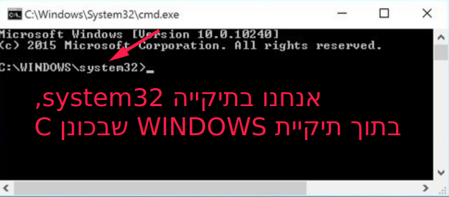

שבוע 10: המוצר wit
הקדמה
אהלן לכולם וברוכים הבאים לשבוע 10. ברכות על הגעתכם עד לכאן – זה השלב שבו הכיף האמיתי מתחיל 
במהלך השבועות הקרובים, מעכשיו ועד סוף הקורס, פייתון תרד קצת (אבל באמת, רק קצת) מהפוקוס, ונתחיל להתקדם לקראת יצירת מוצרים משלנו.
בשבוע הקרוב נבנה פרויקט פייתון קטן משלנו, ונלמד על כלים לניהול הקוד שלנו, שיאפשרו לנו לשמור גרסאות שונות של הקוד שכתבנו ולעבוד במשותף עם אנשים אחרים.
אני מזכיר שהדינמיקה שארצה ליצור בחלק הזה של הקורס היא קצת שונה.
השתתפו בפורומים, שאלו שאלות מעניינות, עזרו אחד לשני ושתפו פיצ’רים ושימושים מגניבים שמצאתם לחומר שנלמד.
ביחד ניצור קבוצת למידה שבה לכל אחד מכם יש מקום לתרום ולקבל ערך בחזרה.
אולי יעניין אתכם: בסוף יחידת הלימוד הזו, אתחיל לאסוף אלי אנשים שהוכיחו את עצמם בתרגולים ומעוניינים להתחיל לתרגל, לבנות פרויקטים ולהשתתף בקבוצות תכנות. היוזמה תיפתח לפי כמות ההיענות, ופרטים לגביה יפורסמו בתום ההרשמה ויגובשו לפי כמות הנרשמים.
תיאור מוצר
כולנו חווינו מצב, בפעם כזו או אחרת, שבו ערכנו מסמך בצורה לא נכונה או מחקנו קובץ – וממש רצינו להחזירו את הגלגל, לשחזר את המצב הקודם.
היה נפלא לו הייתה לנו תוכנה לניהול ומעקב אחרי גרסאות של התיקייה הזו.
בפקודה אחת היינו יכולים “לקחת תמונה” של המצב הנוכחי של תיקיית העבודה שלנו, וכשעשינו טעות – לשחזר את המצב לקדמותו בלחיצת כפתור.
הפרקים הקרובים יהיו מורכבים מתרגילים, בהם אנחנו הולכים לבנות תוכנה שמאפשרת לנו ליצור “אלבום תמונות” שכזה. כשתסיימו לבנות את התוכנה, תוכלו בעזרת פקודה פשוטה לגבות את התוכן של תיקיות, לעקוב בקלות אחרי השינויים שביצעתם בתיקייה מגרסה לגרסה ולהחזיר את המצב לקדמותו אם עשיתם טעות.
זו תהיה דרך ממש נוחה לגבות את הקוד שלכם, נניח, או להסתכל על התפתחות הפרויקט שלכם מגרסה לגרסה.
קצת כלים לפני
כאמור, עד סוף היום הנוכחי אנחנו נכתוב תוכנה קצרה, שתהיה הבסיס לתוכנה המורכבת לניהול הנתונים בעזרת wit.
התוכנה תקבל כקלט נתיב של תיקייה קיימת במחשב שלנו, ותיצור שם תיקייה בשם .wit (נקודה wit), בה נאחסן “תמונות” שיצרנו (גיבויים של התיקייה).
על הדרך, נכיר את שורת הפקודה שלכם ונלמד כיצד להריץ דרכה פרויקטים שכתבתם בפייתון.
היכרות עם שורת הפקודה
בתור התחלה, צרו קובץ בשם hello.py שמדפיס “Hello World”. שמרו אותו במקום נוח במחשב.
כעת נלמד להריץ את הקובץ הזה בעזרת שורת הפקודה במחשב שלכם.
מתכנתים מנוסים משתמשים בסביבה של שורת הפקודה לעיתים קרובות, וזה זמן טוב לעשות איתה היכרות ראשונית.
-
פתחו את שורת הפקודה, ובדקו באיזו תיקייה במחשב אתם נמצאים. בתמונה שמופיעה תחת המשפט הזה, נתיב העבודה העכשווי הוא
C:\WINDOWS\system32(בעגה המקצועית: present working directory או current working directory). - נווטו לתיקייה בה נמצא קובץ הפייתון שברצונכם להפעיל. תוכלו לעשות את זה על־ידי הפקודה
cd PATH, כאשר במקוםPATHכתבו את התיקייה שאליה אתם רוצים לעבור.cdהוא קיצור של change directory. לדוגמה:cd C:\Users\Yamיעבור לתיקייה Yam, שנמצאת תחת התיקייה Users, שנמצאת תחת הכונן C. - טריק:
cd ..יעביר אתכם לתיקייה מעל,cd Yamיעביר אתכם לתיקייה Yam שנמצאת בתוך נתיב העבודה העכשווי שאתם נמצאים בו. - הריצו את קובץ הפייתון שנמצא בתיקייה בעזרת הפקודה
python FILENAME.py, כאשר במקוםFILENAME.pyכתבו את שם הקובץ כולל הסיומת שלו (שהיא, כנראה, py). כדי לראות אילו קבצים נמצאים בתיקייה, הקלידוdirבחלונות אוlsב־Mac/Linux.

שימו לב! (חשוב)
אם נרצה להריץ קובץ פייתון שלא נמצא בתיקיית העבודה הנוכחית שלנו (לא עשינו cd עד לתיקייה שלו), נצטרך לציין את הנתיב המלא אליו.
תוכלו לעשות את זה באחת משתי דרכים:
- כתבו ב־cmd את הפקודה
python, אחריה רווח, ואז תגררו את הקובץ ל־cmd. לחצו ENTER כדי להריץ. - כתבו ב־cmd את הפקודה
pythonואחריה רווח. לכו לקובץ שאתם רוצים להריץ, החזיקו את ה־SHIFT במקלדת ולחצו עליו בכפתור העכבר הימני. לחצו על “העתק כנתיב” (Copy as path), והדביקו בשורת הפקודה.
קבלת פרמטרים בתוכנה דרך שורת הפקודה
מסתבר שבעזרת שורת הפקודה נוכל להעביר לתוכנית שלנו קלט.
עד עכשיו, התרגלנו לקבל מהמשתמש קלט באמצעות input(), שעוצר את התוכנה וממתין לקלט של המשתמש.
מסתבר ששיטה זו אינה פופולרית במיוחד, כיוון שהמצב שבו התוכנה ממתינה לקלט מהמשתמש מקשה על תוכנות אחרות להתממשק איתה.
לכן הסטנדרט בעולם התוכנות הוא שכמעט לעולם לא מחכים לקלט מהמשתמש – אלא הוא פשוט מעביר אותו בשלב שבו הוא מנסה להריץ את הפקודה.
לדוגמה, הפקודה ping שתוכלו להריץ אצלכם בשורת הפקודה, מתקשרת עם כתובת אינטרנט כלשהי ומצפה לקבל תשובה (pong). משתמשים בה הרבה כדי לראות האם יש תקשורת בינינו לבין שירות אחר כלשהו, עם Google לדוגמה.
אם הקלט של הפקודה ping היה ממומש בעזרת input(), היינו צריכים לכתוב ping, ללחוץ אנטר, ואז לחכות לדיאלוג ששואל אותנו לאיזו כתובת אנחנו רוצים לעשות ping, להקליד אותו, ללחוץ שוב אנטר ולחכות לתשובה.
במקום השיטה הטרחנית הזו, הפקודה ping פשוט מקבלת כפרמטר את הכתובת שאליה אנחנו רוצים לשלוח ping. תוכלו לכתוב: ping www.google.com, ללחוץ אנטר ולקבל מיד את תוצאות הפקודה.
נממש תוכנה פשוטה שמקבלת כקלט 2 מספרים ומדפיסה את הסכום שלהם:
number1 = int(input())
number2 = int(input())
print(number1 + number2)
ועכשיו, נממש את אותה תוכנה, רק שהפעם נקבל את הפרמטרים דרך שורת הפקודה:
import sys
number1 = int(sys.argv[1])
number2 = int(sys.argv[2])
print(number1 + number2)
נריץ בעזרת python FILENAME.py 1 2: שם התוכנה שאנחנו רוצים להריץ (python), שם הקובץ שאנחנו רוצים להריץ (FILENAME.py) ואז הקלט שנעביר לתוכנית (הפרמטרים; 1 ו־2).
למסך יודפס המספר 3 והתוכנית תסתיים, בלי צורך באינטרקציה מהמשתמש.
לצורך התוכנה הזו השתמשנו ב־sys.argv, רשימה שמכילה את כל הפרמטרים שהועברו בפקודת ההרצה של התוכנית. sys.argv[0] תמיד יהיה הנתיב שכתבתם אחרי python (במקרה של הדוגמה: FILENAME.py), ואחריו יבואו שאר הפרמטרים שהוכנסו – במקום 1, 2 וכן הלאה.
תרגיל ביניים: זוהר argv
כתבו תוכנה שמחשבת סכום מספרים.
אם לא הועברו לפחות 2 מספרים כפרמטרים, הדפיסו:
Usage: python <filename> <param1> <param2> [...]
אם הועברו לפחות 2 מספרים כפרמטרים, הדפיסו את סכומם.
לדוגמה, עבור: python calc.py 1 2 3 4 6 הדפיסו 16.
בונים את התוכנה
הכנת הסביבה
פיווו, זו הייתה הקדמה ארוכה! הגיע הזמן להתחיל בכתיבת הפרויקט.
נזכיר: במסגרת השיעור היום אנחנו הולכים לבנות תוכנה, שתאפשר לנו “לקחת תמונה” (snapshot) של תיקייה מסוימת כל זמן שנרצה. התוכנה שלנו תנהל את אותן “תמונות” שלקחנו, ותאפשר לנו לחזור למצבים קודמים שבהם הייתה התיקייה.
נדגים כיצד התוכנה מצופה לעבוד.
נניח שבתיקייה בשם dir היו הקבצים foo.py ו־bar.py בקובץ foo.py נכתב print(2 ** 5) ובקובץ bar.py נכתב print("Bye!!"),
“לקחנו תמונה” של התיקייה dir, וקראנו לתמונה הזו בשם השרירותי initial_save.
לאט לאט התיקייה השתנתה. בקובץ foo.py כתוב prink(2 ** 5) ובקובץ bar.py כתוב bye!!('print').
לקחנו תמונה נוספת של התיקייה dir, והפעם קראנו לתמונה save_after_changes.
כעבור זמן, גילינו שהקוד החדש מכיל באגים נוראיים, משל נכתב על ידי מישהו שנרדם על המקלדת.
במקרה כזה, נוכל לבקש מ־wit לחזור לגרסה initial_save.
אם יום אחד יעלו בנו רגשות נוסטלגיים לתצורה השבורה שבה אנחנו נמצאים, נוכל לבקש לחזור לגרסה save_after_changes.
באופן כללי, השימוש ב־wit יתבצע ב־3 שלבים:
- נריץ פקודה שאומרת ל־wit, מערכת ניהול הגרסאות שלנו, שאנחנו רוצים לנהל את גרסאות התיקייה הנוכחית באמצעות wit. נקרא לפקודה הזו
init. - נגיד ל־wit לאילו קבצים אנחנו רוצים שהיא תתייחס בתוך התיקייה (כדי להמנע מהוספה אוטומטית של קבצים רגישים עם סיסמאות או מידע פרטי, שאנחנו לא בטוח רוצים לגבות). נקרא לפקודה הזו
add. - נבצע את הפעולה של השמירה (“לקחת תמונה”). נקרא לפקודה הזו
commit.
נתחיל לממש.
צרו במקום נוח במחשב שלכם את הקובץ wit.py.
הוא יהיה הקובץ שבו נרשום את הקוד של הפרויקט שלנו.
בשביל לפשט עניינים, כל הפרויקט שנכתוב ירוכז תחת הקובץ היחיד הזה, אבל אם תרגישו שנכון לפצל אותו אחר כך לקבצים – תרגישו בנוח.
צרו תיקייה נוספת, במקום אחר (על שולחן העבודה, נניח) – כזו שלא יהיה אכפת לכם לאבד את התוכן שלה במסגרת הניסויים שלנו. תוכלו, לדוגמה, להשתמש בתיקיית שבוע 1 של הקורס.
זו התיקייה שאותה ננסה לגבות במסגרת הניסויים שלנו.
טיפ: צרו לה גיבוי באופן ידני, בינתיים.
תרגיל 2: הפקודה init
פתחו את wit.py שיצרתם, והתחילו ביצירת הפונקציה שנקראת init. הפקודה הזו תשפיע על תיקיית העבודה הנוכחית ותיצור בה את התיקייה .wit (עם נקודה בהתחלה).
- בתוך תיקיית
.witצרו את התיקייהimages, שתכיל בעתיד את כל השמירות שהתבצעו. - בתוך
.witצרו גם תיקייה בשםstaging_area, שתכיל את כל הקבצים שהמשתמש ביקש במפורש לגבות. כרגע התיקייה הזו תהיה ריקה.
דאגו שאם אנחנו רושמים: python path/to/wit.py init (כאשר path/to/wit.py זה הנתיב ל־wit.py), תופעל הפונקציה init על תיקיית העבודה הנוכחית.
תרגיל 3: הפקודה add
הפונקציה add תקבל פרמטר – שם של קובץ או של תיקייה, ותוסיף לתיקייה staging_area את הקובץ, או את כל הקבצים שנמצאים תחת התיקייה שהתקבלה כפרמטר.
נראה כמה דוגמאות עבור התיקייה Etztrubal, שתכולתה משורטטת לפנינו כעץ:
| Etztrubal
├── .wit
│ ├── images
│ └── staging_area
├── dev_requirements.txt
├── Dockerfile
├── LICENSE
├── lms
│ ├── app.py
│ ├── extractors
│ │ ├── base.py
│ │ ├── __init__.py
│ │ ├── notebook.py
│ │ ├── pyfile.py
│ │ └── ziparchive.py
│ ├── __init__.py
│ ├── lmsdb
│ │ ├── bootstrap.py
│ │ ├── database_config.py
│ │ ├── __init__.py
└── └── └── models.py
- אם, בעודנו נמצאים בתיקייה Etztrubal, אנחנו נעשה add ל־
dev_requirements.txt– לתיקייה staging_area יתווסף הקובץdev_requirements.txt. - אם, בעודנו נמצאים בתיקייה Etztrubal, אנחנו נעשה add ל־
lms/lmsdb– בתיקייה staging_area תווצר התיקייה lms, תחתיה התיקייה lmsdb, והקבציםbootstrap.py,database_config.py,__init__.pyו־models.pyיועתקו אליה. - אם, בעודנו נמצאים בתיקייה
lmsאנחנו נעשה add ל־extractors, תחתEtztrubal/.wit/staging_area/lmsתצורף התיקייהextractors, ובה יופיעו הקבציםbase.py,__init__.py,notebook.py,pyfile.pyו־ziparchive.py.
בקצרה: כל פעם שנבצע את פעולת add על קובץ, נחפש את תיקיית העל הקרובה ביותר בה יש קובץ .wit, וממנה נגזור את הנתיב היחסי לקובץ שעליו התבצעה הפקודה add. בתוך תיקיית staging_area ניצור שכפול של התיקייה המקורית עבור כל הקבצים שעליהם עשינו add.
אם עשינו add על תיקייה, נצרף ל־.wit על כל הקבצים שבתיקייה, ועל כל הקבצים שבתתי התיקיות וכן הלאה.
אם אין תיקיית .wit באף תיקיית־על, זרקו שגיאה מתאימה.
דאגו שאם אנחנו רושמים: python path/to/wit.py add path2 (כאשר path/to/wit.py זה הנתיב ל־wit.py), תופעל הפונקציה add על ה־path2, כשאתם מתייחסים לנתיב ביחס לתיקיית העבודה הנוכחית.
עדכון חשוב לתרגיל wit add: בעקבות הרבה בלבול בהגשות, עיינו בבקשה בביאור לגבי איך wit add אמור לעבוד – הבהרת התרגיל: פקודת add
המשך יבוא ביום 2
יכולים לדמיין מה הולכות להיות הפקודות הבאות שתממשו?
אני מודע שיש במחברת הזו הרבה מאוד חומר חדש ולא טריוויאלי.
תרגישו בנוח לפתוח אשכולות ולהתייעץ על איך דברים אמורים לעבוד, אשמח לראות דיונים על החומר!